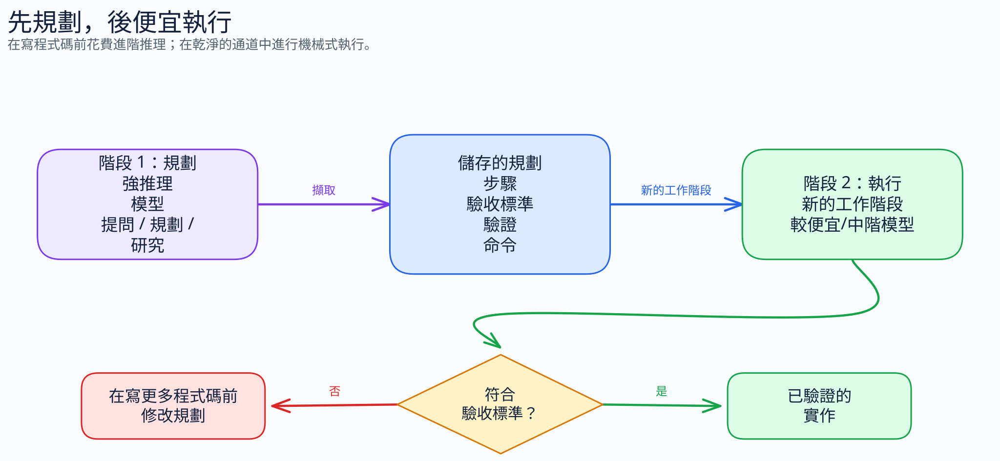

實務人員簡報
實現更便宜、更快速、更可靠的 AI 輔助工程的 18 項行動。
需要完整訓練？開啟 8 小時工作坊。
減少不必要的輸入、輸出與工具開銷。
保持 Context 聚焦。避免昂貴的重做迴圈。
規劃、驗證並針對任務使用正確的 Agent 模式。
社群指導方針，非 GitHub 或 Microsoft 官方政策。
系統提示詞、說明、檔案、歷史紀錄、工具 Schema 及您的提示詞。
回應、推理與工具呼叫。通常是成本最高的 Token 類型。
穩定的請求前綴可以以更低的有效成本重複使用。
每次讀取、命令、重試與重做步驟都會使成本發揮複利效果。
對程式碼任務、審查與摘要使用簡短、明確的格式。輸出控制會在每次互動中發揮複利效果。
當任務需要時，請勿壓縮推理或依據。
專案地雷區、命令、命名、架構規則、輸出限制。
樣板、探索事實、重複規則、偶爾使用的工作流程檢查清單。
.github/copilot-instructions.md 中的每個 Token 都會被重複計費。請將罕見的指導方針放在限定範圍或隨選檔案中。
applyTo 說明檔案來設定特定路徑的規則。對於單一長任務，請保持以下內容穩定：
變更管道或控制架構可能會失去快取前綴的節省效益。請帶著精簡的交接開啟新的聊天。
問題、解釋、決策。不需要工具。
已知檔案與意圖的具體變更。
需要探索、命令與驗證的多檔案工作。
對於 Ask 模式即可回答的問題，請勿使用 Agent 模式。
在長工作階段開始前選擇推理努力度。請勿在對話串中途提高推理努力度。

擷取驗收條件、可能檔案、風險與驗證。僅攜帶該交接內容開始執行。
/context 以檢視已載入的內容。針對常見開發者命令輸出的編譯預設值。
YAML 管道與本地節省追蹤。
每個命令路徑選擇一個篩選層。預設情況下請勿同時堆疊兩者。
Graphify 對大型儲存庫進行一次性對映，之後 Agent 即可查詢結構，而非重複讀取大量檔案集。
graphify query "where is auth middleware?"
graphify path "Router" "Database"最適合大型儲存庫與重複的 Agent 工作階段。對於小型、一次性的變更可跳過。
使用 /context 檢查 Copilot CLI Context 壓力與已載入工具。
Tokentop 顯示本地即時 Token、成本、消耗率與預算警報。
可視化能發現浪費。它本身不會壓縮 Context。
在長時間工作前選擇它。若任務需要不同的控制架構，請建立全新的工作階段，而非修改長逐字稿。
微小的驗證成本可避免日後開啟新的除錯或審查工作階段。
限制輸出。修剪儲存庫說明。
審慎路由 Ask、Edit 與 Agent。
稽核 MCP 工具與命令輸出。
先規劃的工作流程、快取穩定性與用量審查。
每個任務：限制輸出、精準 Context、選擇控制架構、規劃並驗證。